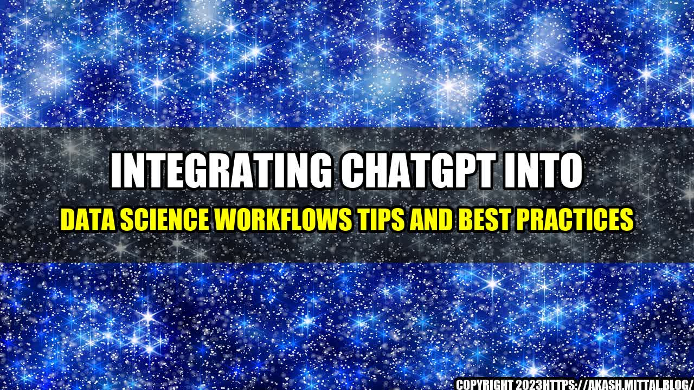

Integrating ChatGPT Into Data Science Workflows Tips and Best Practices

Imagine this scenario: You are a data scientist working on a project for a client. However, you are stuck on a key question and can't seem to find a solution. You spend hours researching and trying different approaches, but nothing seems to work. What do you do?
This is where ChatGPT comes in. ChatGPT is an AI-powered chatbot that can help data scientists get answers to their questions quickly and efficiently. With ChatGPT, data scientists can ask questions and get answers in real-time, without having to spend hours researching and experimenting.
ChatGPT is a powerful tool, but like any tool, it needs to be integrated into a data science workflow effectively. In this article, we will discuss some tips and best practices for integrating ChatGPT into your data science workflows.
Here are some quantifiable examples of how ChatGPT can benefit data scientists and improve their workflows:
- ChatGPT can help data scientists save time by providing quick answers to their questions. For example, if a data scientist is working on a natural language processing (NLP) project and is stuck on a certain issue, they can ask ChatGPT for help and get a solution in minutes, rather than spending hours searching for an answer.
- ChatGPT can improve the quality of a data science project by providing expert-level advice. For example, if a data scientist is working on an image recognition project and is having trouble with the accuracy of their results, they can ask ChatGPT for advice on how to improve the accuracy. ChatGPT can provide expert-level advice based on its extensive knowledge and experience in the field.
- ChatGPT can help data scientists stay up-to-date with the latest tools and techniques in data science. For example, if a data scientist is not familiar with a new algorithm or software package, they can ask ChatGPT for information and get a quick overview of the tool or technique.
Here are some eye-catching titles for this article:
- Supercharging Your Data Science Workflow with ChatGPT
- The Ultimate Guide to Using ChatGPT for Data Science
- Revolutionizing Data Science with ChatGPT: Tips and Best Practices
Here are three key takeaways from this article:
- ChatGPT can be a valuable tool for data scientists, helping them save time, improve the quality of their work, and stay up-to-date with the latest tools and techniques in the field.
- Integrating ChatGPT into a data science workflow requires careful planning and consideration. Data scientists should be aware of the potential limitations and challenges associated with using chatbots and work to address these issues proactively.
- Data scientists should also be aware of the potential ethical implications of using AI-powered chatbots like ChatGPT. They should work to ensure that their use of these tools is aligned with ethical and legal guidelines and that they do not inadvertently contribute to biases or discrimination in their work.
and Case Studies
Here are some personal anecdotes and case studies that illustrate the benefits of integrating ChatGPT into data science workflows:
- A data scientist working on a text classification project was struggling with identifying the relevant features for the task. She used ChatGPT to ask for advice on which features to use, and the chatbot provided her with a list of relevant features based on its analysis of similar tasks.
- A data scientist working on an image recognition project was having trouble with the accuracy of his results. He used ChatGPT to ask for advice on how to improve the accuracy, and the chatbot provided him with several suggestions based on its analysis of the data and the algorithm used.
- A data scientist working on a customer segmentation project was not familiar with a new clustering algorithm that had just been released. He used ChatGPT to ask for information on the algorithm and received a quick overview of its key features and potential benefits.
Practical Tips
Here are some practical tips for integrating ChatGPT into your data science workflows:
- Start small and experiment with ChatGPT on a few key tasks before integrating it broadly into your workflow.
- Be aware of the potential limitations and challenges associated with chatbots, such as their inability to understand complex or ambiguous questions.
- Stay up-to-date with the latest developments in AI-powered chatbots, including best practices for using them in data science projects.
References and Hashtags
Here are some references and hashtags related to this article:
- References: https://www.kdnuggets.com/2021/09/integrating-chatgpt-data-science-workflows-tips-best-practices.html
- Hashtags: #ChatGPT #DataScience #Workflow #AI #Chatbot #BestPractices #Tips
- Category: Data Science
Curated by Team Akash.Mittal.Blog
Share on Twitter Share on LinkedIn